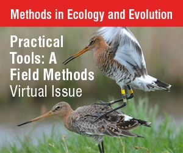
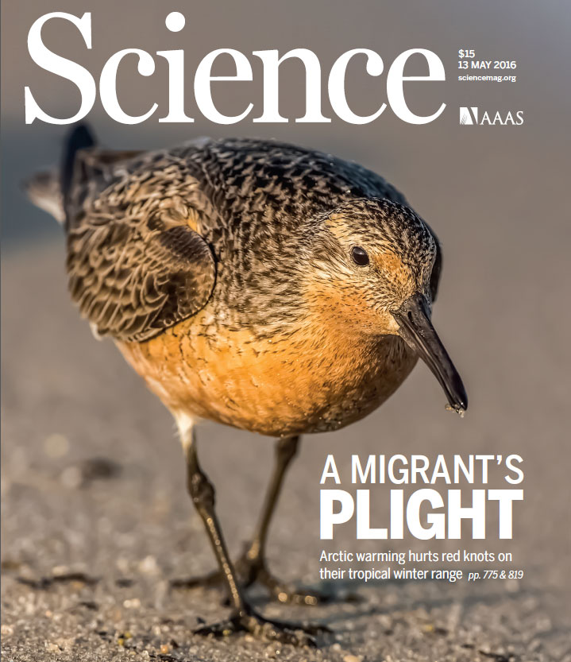

My research lays at the nexus between conservation ecology, statistics, and data science. Having studied adaptation of migratory bird populations to environmental pressures, I am currently on a track to developing a system that will use birds as living sensors for global near real-time detection of environmental pressures.
I explore how migratory birds adjust their annual routines to environmental stressors as they successively connect arrays of ecosystems laying far away and functioning independently from each other. I apply existing and develop custom advanced methods in geospatial analysis and frequentist and Bayesian statistical modelling to combine diverse datasets, such as satellite imagery, count and capture-recapture, and tracking data. With this integrated analysis I find that in a stable population, as a result of the annual cycle connectivity, selection pressures are evenly distributed in space and time. Facing fitness-compromising conditions at a certain stage of the annual cycle, animals redistribute their detrimental effects trading their fitness at earlier or later stages. Based on this, I argue that conservation efforts undertaken locally can mitigate environmental pressures on a population in other seasons, sometimes thousands of kilometres away.
- movement ecology
- animal sensing
- animal conservation
- population ecology
- applied statistics
-
PhD in Zoology, 2008
Lomonosov Moscow State University
-
MSc in Zoology, 2003
Lomonosov Moscow State University
Experience
- Teaching Introductory Statistics
- Research on Arctic breeding shorebirds
- Conservation ecology of black-tailed godwit
- Development of animal sensing approach
- Teaching various courses
- Development of seasonal survival concept
- Population ecology of shorebirds
- Development of solar geolocation methodology
- Breeding Ecology of Tree swallows
- Teaching Introductory Statistics
- Research on Arctic breeding shorebirds
Professional training


Research themes


Teaching
Bachelor students
2021 Bachelors’ research project in Ecology and Evolution (GELIFES, University of Groningen) Effects of environmental covariates and agricultural practices on movements and faith of the black-tailed godwit chicks, students - Manon Ploeger and Sander van Dalsen.
2020-2021 Bachelors’ research project in Artificial Intelligence (Institute of Informatics, University of Amsterdam) Detecting Wildfires Through the Use of Bird Behaviour, student – Guilly Kolm
2010-2011 Undergraduate students honours theses supervision at the Department of Ecology and Evolutionary Biology, Cornell University, USA. Two papers published with the students – Winkler et al. 2013, Karagicheva et al. 2016.
2003-2005 Vertebrate Zoology course at the Biological Faculty of Lomonosov Moscow State University.
Masters students
Developed and taught master student courses at the Department of Vertebrate Zoology Lomonosov Moscow State University (Russia):
2016-2020 Introductory statistics for zoologists with R
2005-2015 Databases and statistics for zoologists
In 2021 delivered Introductory statistics for zoologists with R fully remote course with RStudio Cloud platform
2015, 2017, 2018 & 2020 gave lectures, seminars and supervised mini research projects in the masters students course by prof. Theunis Piersma on Flyway Ecology at the University of Groningen (The Netherlands).
2018-2019 developed and taught Bayesian Population Modelling block within Advanced Population and Community Ecology for masters students at the University of Groningen (The Netherlands).
2019 & 2020 supervised research projects within masters student course on Ecological Research Skills at the University of Groningen.
PhD students and postdoctoral researchers
2021 – 2025 co-supervisor of PhD candidate Marie Stessens in the project Black-tailed godwit management and demography, Conservation Ecology Group, GELIFES, University of Groningen
2021 – PhD examining committee Chan, Y.C., Conservation Ecology Group, GELIFES, University of Groningen.
Short cources on solar geolocation data analysis
-
2018 Solar geolocation with open access tools at International Ornithological Congress in Vancouver (Canada)
-
2017 Solar geolocation with open access tools at International Wader Study Group Conference in Prague (Czech Republic)
-
2016 Solar geolocation with open access tools at the North American Ornithological Congress in Washington, DC (USA)
-
2015 FLightR – an R package for solar geolocation data analysis, Groningen University, (Netherlands)
-
2015 Solar geolocation with open access tools at the AOU-COS conference in Oklahoma (USA)
-
2015 FLightR – an R package for solar geolocation data analysis, Swiss Ornithological Institute (Switzerland)
Publications
2021
T. Piersma, E.M.A. Kok, C.J. Hassell, H. Peng, Y.I. Verkuil, G. Lei, J. Karagicheva, E. Rakhimberdiev, P.W. Howey, T.L. Tibbitts, and Y. Chan. When a typical jumper skips: itineraries and staging habitats used by red knots (Calidris canutus piersmai) migrating between northwest Australia and the New Siberian Islands. Ibis, 2021.
M. Goretskaia, E. Rakhimberdiev, S. Naidenko, V. Moskalenko, E. Veselovskaya, V. Gavrilov, E. Vostretsova, and I. Beme. Testosterone increase in free-living young Blackcaps Sylvia atricapilla and Wood Warblers Phylloscopus sibilatrix during post-juvenile molt with possible implications for juvenile dispersal. Acta Ornithologica 55: 2021.
2020
S. Lisovski, S. Bauer, M. Briedis, S.C. Davidson, K.L. Dhanjal-Adams, M.T. Hallworth, J. Karagicheva, C.M. Meier, B. Merkel, J. Ouwehand, L. Pedersen, E. Rakhimberdiev, A. Roberto-Charron, N.E. Seavy, M.D. Sumner, C.M. Taylor, S.J. Wotherspoon, and E.S. Bridge. Light-level geolocator analyses: A user’s guide. Journal of Animal Ecology, 2020.
K. P. Lamers, M. Nicolaus, E. Rakhimberdiev, J. Nilsson, and C. Both. Descriptive and experimental evidence for timing-mediated polygyny risk in a pied flycatcher (Ficedula hypoleuca) population. Journal of Avian Biology, 2020.
2019
M. Bulla, J. Reneerkens, E. L. Weiser, A. Sokolov, A. R. Taylor, B. Sittler, B. J. McCaffery, D. R. Ruthrauff, D. H. Catlin, D. C. Payer, D. H. Ward, D. V. Solovyeva, S. A. Santos Eduardo, E. Rakhimberdiev, E. Nol, E. Kwon, G. S. Brown, G. D. Hevia, G. H. River, J. A. Johnson, J. A. van Gils, J. Hansen, J.-F. Lamarre, J. Rausch, J. R. Conklin, J. Liebezeit, J. Bêty, J. Lang, J. A. Alves, J. Fernández-Elipe, K.-M. Exo, L. Bollache, M. Bertellotti, M.-A. Giroux, M. van de Pol, M. Johnson, M. L. Boldenow, M. Valcu, M. Soloviev, N. Sokolova, N. R. Senner, N. Lecomte, N. Meyer, N. M. Schmidt, O. Gilg, P. A. Smith, P. Machín, R. L. McGuire, A. S. Cerboncini Ricardo, R. Ottvall, S. A. van Bemmelen Rob, R. J. Swift, S. T. Saalfeld, S. E. Jamieson, S. Brown, T. Piersma, T. Albrecht, V. D’Amico, R. B. Lanctot, and B. Kempenaers. Comment on “global pattern of nest predation is disrupted by climate change in shorebirds”. Science, 364(6445):eaaw8529, 2019.
2018
E. Rakhimberdiev, S. Duijns, J. Karagicheva, C. J. Camphuysen, A. Dekinga, R. Dekker, A. Gavrilov, H. J. ten, J. Jukema, A. Saveliev, M. Soloviev, T. T. Lee, J. A. van Gils, and T. Piersma, Fuelling conditions at staging sites can mitigate arctic warming effects in a migratory bird. Nature communications, 9: 4263.
J. Karagicheva, E. Rakhimberdiev, A. Saveliev, and T. Piersma. Annual chronotypes functionally link life histories and life cycles in birds. Functional Ecology, 32(10): 2369-2379.
S. Lisovski, H. Schmaljohann, E. S. Bridge, S. Bauer, A. Farnsworth, S. A. Gauthreaux, S. Hahn, M. T. Hallworth, C. M. Hewson, J. F. Kelly, F. Liechti, P. P. Marra, E. Rakhimberdiev, J. D. Ross, N. E. Seavy, M. D. Sumner, C. M. Taylor, D. W. Winkler, S. J. Wotherspoon, and M. B. Wunder. Inherent limits of light-level geolocation may lead to over-interpretation. Current Biology, (28): R99–R100, 2018.
2017
S. Åkesson, M. Ilieva, J. Karagicheva, E. Rakhimberdiev, B. Tomotani, and B. Helm. Timing long-distance migration: from internal clock mechanisms to global flights. Philosophical Transactions of the Royal Society B, 372: 20160252.
N. G. Perlut, T. C. Klark, and E. Rakhimberdiev. Geolocator data reveal the migration route and wintering location of a carribean swallow (Progne dominicensis). Wilson Journal of Ornithology, 129(3): 605-10.
D. W. Winkler, F. A. Gandoy, J. I. Areta, M. J. Iliff, E. Rakhimberdiev, K. J. Kardynal, and K. A. Hobson. Long-distance range expansion and rapid adjustment of migration in a newly established population of barn swallows breeding in Argentina. Current Biology, 7: 1080–1084.

E. Rakhimberdiev, A. Saveliev, T. Piersma, and J. Karagicheva. FLightR: An R package for reconstructing animal paths from solar geolocation loggers. Methods in Ecology and Evolution, 8(11) 1482–1487.
J. Jouta, M. W. Dietz, J. Reneerkens, T. Piersma, E. Rakhimberdiev, G. T. Hallgrímsson, and I. Pen. Ecological forensics: Using single point stable isotope values to infer seasonal schedules of animals after two diet switches. Methods in Ecology and Evolution, (8): 492–500.
J. S. Gutiérrez, E. Rakhimberdiev, T. Piersma, and D. W. Thieltges. Migration and parasitism: habitat use, not migration distance, influences helminth species richness in charadriiform birds. Journal of Biogeography, 44(5): 1137-1147.
2016
J. Karagicheva, M. Liebers, E. Rakhimberdiev, K. K. Hallinger, A. Saveliev, and D. W. Winkler. Differences in size between first and replacement clutches match the seasonal decline in single clutches in tree swallows tachycineta bicolor. Ibis, 158(3): 607-613.
E. Rakhimberdiev. Ornithology by light levels today: dealing with a developing teenager. Wader Study, 123(1): 1–3.
J. Karagicheva, E. Rakhimberdiev, A. Dekinga, M. Brugge, A. Koolhaas, H. J. ten, and T. Piersma. Seasonal time keeping in a long-distance migrating shorebird. Journal of Biological Rhythms, 31(5): 509-521.
E. Rakhimberdiev, N. Senner, M. Verhoeven, D. Winkler, W. Bouten, and T. Piersma. Comparing inferences of solar geolocation data against high-precision gps data: annual movements of a double-tagged black-tailed godwit. Journal of Avian Biology, 47(4): 589-596.

J. A. van Gils, S. Lisovski, T. Lok, W. Meissner, A. Ozarowska, J. de Fouw, E. Rakhimberdiev, M. Y. Soloviev, T. Piersma, and M. Klaassen. Body shrinkage due to arctic warming reduces red knot fitness in tropical wintering range. Science, 352(6287) :819–821.
2015
E. Rakhimberdiev, D. W. Winkler, E. Bridge, N. E. Seavy, D. Sheldon, T. Piersma, and A. Saveliev. A hidden markov model for reconstructing animal paths from solar geolocation loggers using templates for light intensity. Movement Ecology, 3(1).
E. Rakhimberdiev, P. J. van den Hout, M. Brugge, B. Spaans, and T. Piersma. Seasonal mortality and sequential density dependence in a migratory bird. Journal of Avian Biology, 46(4): 332–341.
2014
E. Rakhimberdiev, J. Karagicheva, K. Jaatinen, D. W. Winkler, J. B. Phillips, and T. Piersma. Naïve migrants and the use of magnetic cues: temporal fluctuations in the geomagnetic field differentially affect male and female ruff Philomachus pugnax during their first migration. Ibis, 156(4): 864–869.
D. W. Winkler, K. M. Ringelman, P. O. Dunn, L. Whittingham, J. T. Hussell David, R. G. Clark, R. D. Dawson, J. L. Scott, A. Rose, S. H. Austin, R. W. Douglas, M. P. Lombardo, P. A. Thorpe, D. Shutler, R. J. Robertson, M. Stager, M. Leonard, A. G. Horn, J. Dickinson, V. Ferretti, V. Massoni, F. Bulit, J. C. Reboreda, M. Liljesthröm, M. Quiroga, E. Rakhimberdiev, and D. R. Ardia. Latitudinal variation in clutch size–lay date regressions in tachycineta swallows: effects of food supply or demography? Ecography, 37(7): 670–678.
2013
D. W. Winkler, M. K. Luo, and E. Rakhimberdiev. Temperature effects on food supply and chick mortality in tree swallows (Tachycineta bicolor). Oecologia, (173): 129–138.
2012
Y. I. Verkuil, N. Karlionova, E. Rakhimberdiev, J. Jukema, J. J. Wijmenga, J. C. W, P. Pinchuk, E. Wymenga, A. J. Baker, and T. Piersma. Losing a staging area: Eastward redistribution of afro-eurasian ruffs is associated with deteriorating fuelling conditions along the western flyway. Biological Conservation, 149(1): 51–59.
2011
J. Karagicheva, E. Rakhimberdiev, D. Dobrynin, A. Saveliev, S. Rozenfeld, O. Pokrovskaya, J. Stahl, J. Prop, and K. Litvin. Individual inter-annual nest-site relocation behaviour drives dynamics of a recently established barnacle goose Branta leucopsis colony in sub-arctic russia. Ibis, 153(3): 622–626.
E. Rakhimberdiev, Y. I. Verkuil, A. A. Saveliev, R. A. Väisänen, J. Karagicheva, M. Y. Soloviev, P. S. Tomkovich, and T. Piersma. A global population redistribution in a migrant shorebird detected with continent-wide qualitative breeding survey data. Diversity and Distributions, 17(1): 144–151.
2007
E. Rakhimberdiev, M.Y. Soloviev, V.V. Golovnyuk, T.V. Sviridova. The influence of snow cover on selection of nesting grounds by Charadrii waders grounds in South-Eastern Taimyr Peninsula. Zoologicheskiĭ zhurnal, 86(12): 1490-1497.
Contact
- e.rakhimberdiev@rug.nl
- +31 6 22127451
- Kerklaan 30G, Haren, Groningen 9751NN